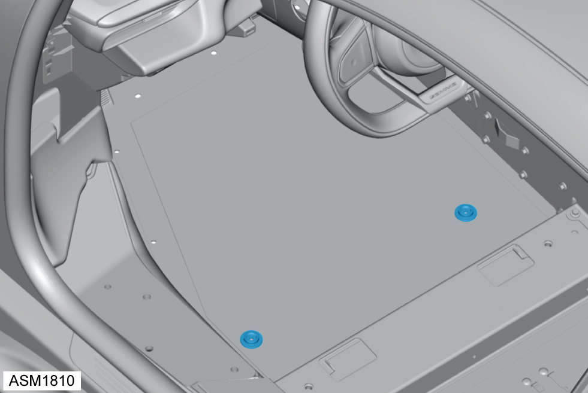

Carpet Mat Retaining Lug
Print
Operation Code: 15.30.04-02
Removal
- Open door.
- Remove upper carpet mat retaining lugs (x2) securing carpet mat to carpet.
- Remove carpet mat.
- Remove carpet - left side. Refer to procedure.

- Remove lower carpet mat retaining lugs (x2).
Installation
- Installation is the reverse of removal procedure.